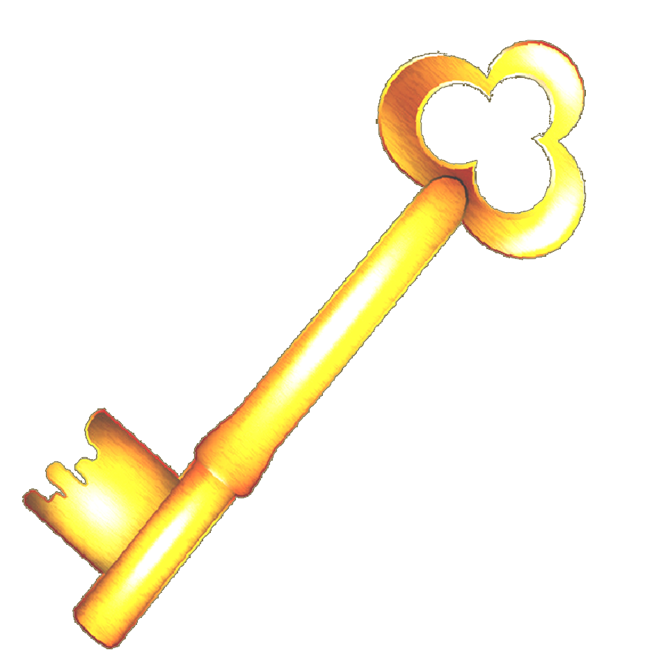

- PaglathalaMga AralinMga TauhanSimoun Basilio Isagani Macaraig Kabesang Tales Padre Florentino Don Custodio Jograt Paulita Gomez Juli Juanito Palaez Donya Victorina Padre Camorra Ben-Zayb Placido Penitente Tiburcio de Espadaña Hermana Penchang Padre Irene Quiroga Don Timoteo Palaez/a> Tandang Selo Padre Fernandez Sandoval Hermana Bali Padre Millon Tadeo Leeds Tano Pepay Gobernador Heneral Padre Hernando De la Sibyla Pecson Padre Bernardo Salvi Kapitan TiyagoSaliksikinKabanata 1 Kabanata 2 Kabanata 3 Kabanata 4 Kabanata 5 Kabanata 6 Kabanata 7 Kabanata 8 Kabanata 9 Kabanata 10 Kabanata 11 Kabanata 12 Kabanata 13 Kabanata 14 Kabanata 15 Kabanata 16 Kabanata 17 Kabanata 18 Kabanata 19 Kabanata 20 Kabanata 21 Kabanata 22 Kabanata 23 Kabanata 24 Kabanata 25 Kabanata 26 Kabanata 27 Kabanata 28 Kabanata 29 Kabanata 30 Kabanata 31 Kabanata 32 Kabanata 33 Kabanata 34 Kabanata 35 Kabanata 36 Kabanata 37 Kabanata 38 Kabanata 39


PANIMULA KAY JULISi Huli ay isang alila sa tahanan ni Hermana Penchang na kung saan kinakailangan niyang mag-aral ng dasal, magbasa ng mga aklat na ipinamimigay ng mga pari at gumawa rin ng mga gawaing bahay Isa siyang taong naniniwala sa himalA. Masasabing siya ay makasalanan sapagkat hindi siya marunong bumigkas ng mga dasal na isinasaulo sa simbahan. Malungkutin rin siya dahil nagsimula ito mula noong napabilanggo ang kanyang ama na si Kabesang Tales at nang mapahamak ang kanyang katipang si Basilio.


MGA GAWAIN Maghanda para sa mga gawaing nakatala sa ibaba. Ang ilan ay gagawin sa sagutang papel. Ang ilan ay kinakailangan ng kooperasyon ninyong magkakaklase. Maging alerto dahil mayroon lamang kaunting oras upang masagutan at maisagawa ang mga ito! … Gawain 1 »Gawain 2 »Gawain 3 »Pangkatan »MAHALAGANG KAGANAPAN
• Si Kabesang Tales ay ang anak ni Tandang Selo na tumulong noon kay Basilio sa kagubatan ay isa nang Kabesa de Barangay.
• Sina Lucia na namatay sa malaria kasama ang kanyang asawa, si Tano at si Julia, ang mga anak ni Kabesang Tales.
• Sa pakikipagsapalaran ni Kabesang Tales sa bukid, natagpuan ni Kabesang Tales ang isang lupa na walang nagmamay-ari kung kaya’t ginawa nyang tubuhan.
• Umunlad ang bukid dahil sa sipag at tiyaga ni Kabesang Tales.
• Nang umunlad ang bukid ay pinagkitaan ito ng mga prayle at pinagbayad ng buwis si Kabesang Tales.
• Sinubukan itong tutulan ni Kabesang Tales ngunit sa bandang huli siya pa rin ay nakulong.
• Ang pagkakaagaw ng Korporasyon sa lupain ni Tales ay nagpapahiwatig ng mga kasamaang umiiral noong panahon ng Kastila
• Bilang anak ay ginawa ni Juli ang lahat upang makalaya ang kanyang ama sa mga tulisang nagpapatubos kasama na dito ang pamamasukan bilang katulong kay Hermana Penchang.
• May isang lalaking dumating at naghukay gamit ang asarol.
• Nakilala naman ni Basilio ang taong ito. o Ang taong naghuhukay ay si Ibarra na dating tumulong na magpalibing sa pagpapalibing sa ina ni Basilio at lalaking sugatan labing-tatlong taon na ang lumipas na ngayon ay nagpapanggap bilang si Simoun, isang mag-aalahas.
• Ang pagpatay ni Simoun sa mga taong nakakaalam ng kanyang sikreto ay hindi nangyari kay Basilio sapagkat pareho rin sila ng naging kapalaran.
• Sinubukang hikayatin ni Simoun si Basilio na sumali sa kanyang binabalak na paghihigante ngunit naging matigas si Basiio sa kanyang pinaniniwalaan.
• Mas lalo namang tumibay ang pagnanais ni Simoun na makapaghigante.
• Ang inakalang naghihimalang Mahal na Birhen ni Juli ay hindi natupad.
• Inabala na lang ni Julia ng kanyang sarili at nag-ayos ng kanyang mga damit na dadalhin sa pagpunta kay Hermana Penchang.
• Si Tandang Selo naman ay tuluyan ng napipi noong minsang pumunta ang kanyang mga kamag-anak upang mamasko suot-suot ang magagarang damit.
• Tuluyang natagpuan ni Simoun ang taong kanyang hinahanap, isang pangahas ngunit marunong tumupad sa pangako sa katauhan ni Kabesang Tales.
• Minsang manuluyan ni Simoun sa bahay ni Kabesang Tales.
• Naghanda si Kabesang Tales ng baril, gulok o palakol
• Sumama si Kabesang Tales sa mga tulisan at kinuha ang rebolber ng mag-aalahas.
• Pinaalalahanan niya si Simoun tungkol sa pahamak na matatamo ni Simoun sa mga tulisan.
• Dinamdam ni Huli ang pagkakahuli sa kanyang kabiyak na si Basilio at pagkamatay ni Kapitan Tiyago.
• Hindi mapalagay ang kanyang damdamin, kaya’t nagdadalawang isip noong una ay nilapitan niya si Padre Camorra upang makalaya si Basilio.
• Alam ni Huli na sa kanyang paghingi ng tulong kay Padre Camorra ay may kapalit.
• Kinagabihan, ay naging usap-usapan ang pagtalon ni Huli sa bintana ng kumbento.
• Ang lolo naman ni Huli na si Tandang Selo ay nagwala sa harap ng kumbento at sa huli ay sumama sa tulisan sa kawalan ng pag-asang matatam niya ang katarungan para sa kanyang apo

MGA SAGOT Ikaw ba'y tapos nang magsagot? Sinigurado mo ba ang mga ito? Dito natin masusukat kung tunay na mayroon kang natutunan sa ating aralin. Pindutin ang susi upang malaman ang mga kasagutan!
…
…
Magpatuloy sa susunod na aralin »